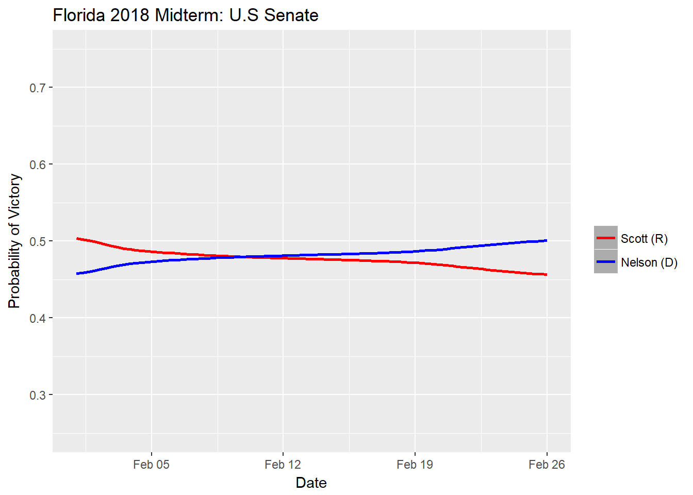

Politics
This page will be updated as new polls are published. I intend to run analyses using Bayesian methods to predict the outcomes for some important 2018 midterm elections after primaries have been conducted.
About my predictions
I use a conjugate prior method with the Dirichlet-Multinomial model to estimate the probability of victory. Thus, no complex, long simulations with Markov Chains are involved. I inform each prior slightly differently, but mainly consider recent past statewide elections.
Florida Senate: Scott (R) vs. Nelson (D)

Courtesy: Washington Examiner
Prior probabilities of victory
Scott: 51.6%
Nelson: 44.3%
The Model

Last poll released: 2/26/2018
Polls source - RealClearPolitics
Scott seems to be trending down, falling behind to Nelson in two polls conducted in late February with substantial sample sizes (>1000).
Arizona Senate: McSally/Arpaio/Ward (R) vs. Sinema (D)

Courtesy: Washington Examiner